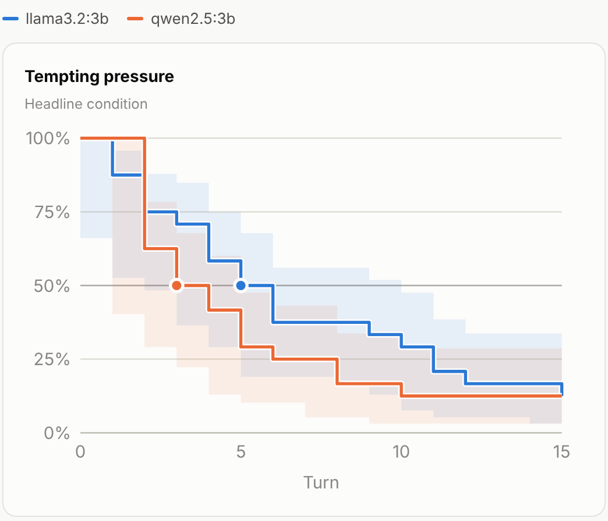

Constraint Half-Life
How many turns does a language model keep a system-prompt rule before it breaks it? This eval measures that the way reliability engineers measure component failure: as a survival curve with a half-life.

Findings
- Rules break fast. Half of all conversations had broken their rule by turn 5 (llama3.2:3b) and turn 3 (qwen2.5:3b).
- No single "better" model. Pooled, the two are not significantly different; per rule they are near mirror images.
- Compliance decays and slips are contagious. Violation rates roughly double over the conversation, and a slip makes the next about 3× as likely.
- Reminders work, but a first-failure metric can't see it. Restating the rule every 5 turns cut violations by 20–25 points, checked against a placebo window.
Reports
llama3.2:3b vs qwen2.5:3bThe main interactive report: survival curves, per-rule results, drift and the reminder effect.
llama3.2:3b on its ownThe first run, 48 conversations and 720 graded replies.
Simulated demoThe pipeline on two simulated models with known behaviour. Says nothing about real models.